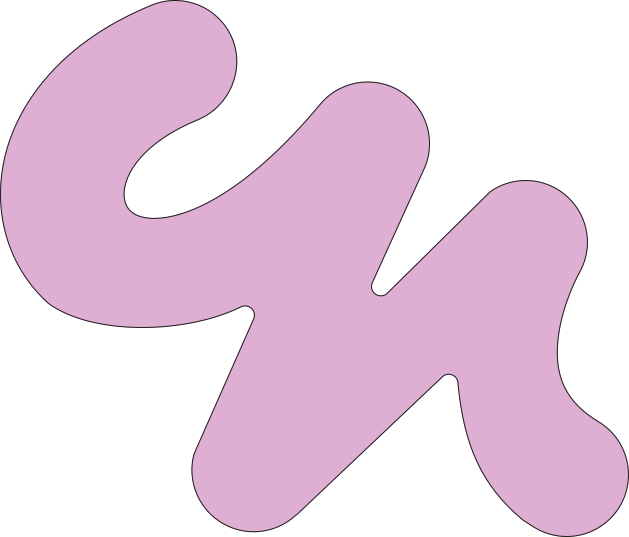
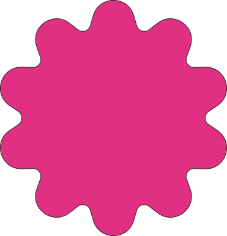

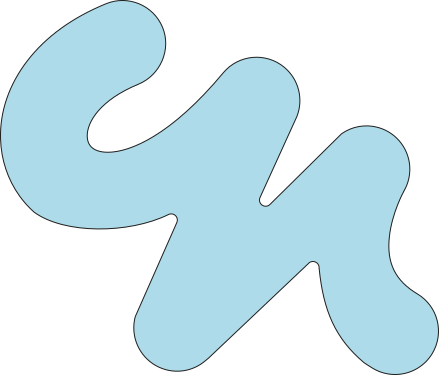
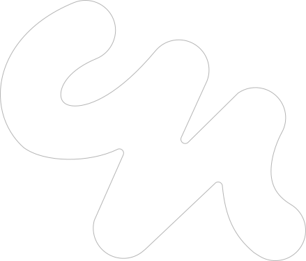

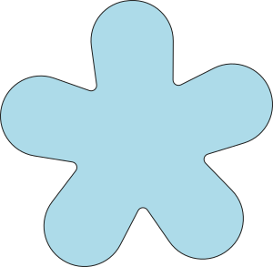
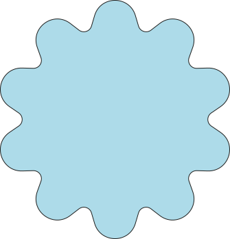
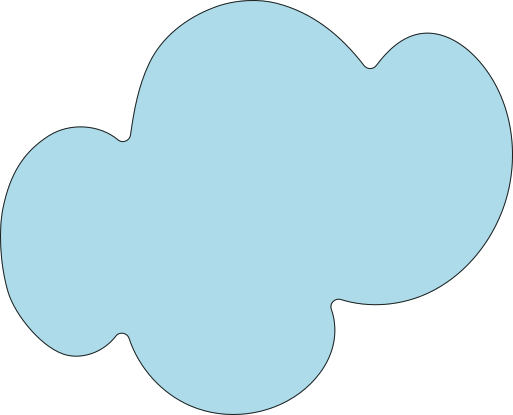
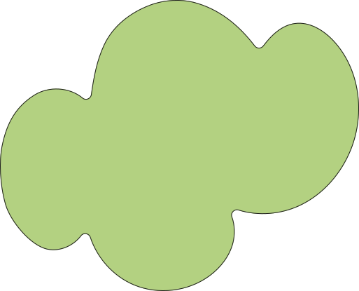
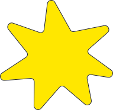
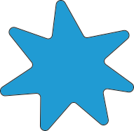
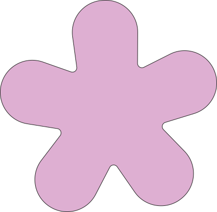
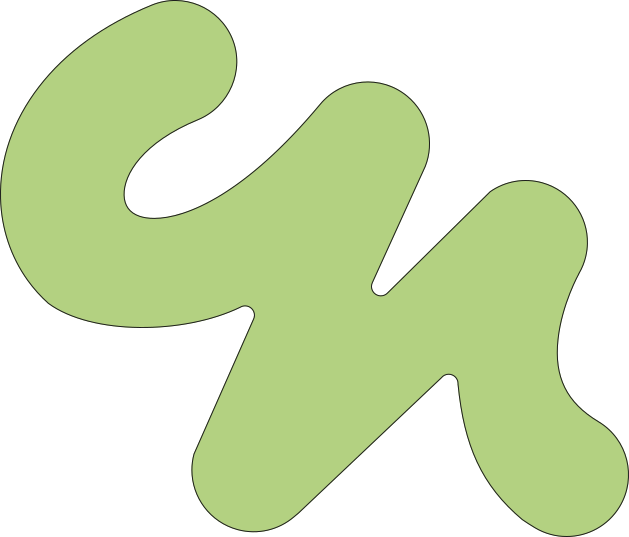
5
Kunstjakten
Finn de skjulte detaljene! Meld deg på i vestibylen.
Passer for barn fra 7-10 år
Tast inn koden din
Oops.. har du skrevet feil kode?
Hei,Kristine!
5
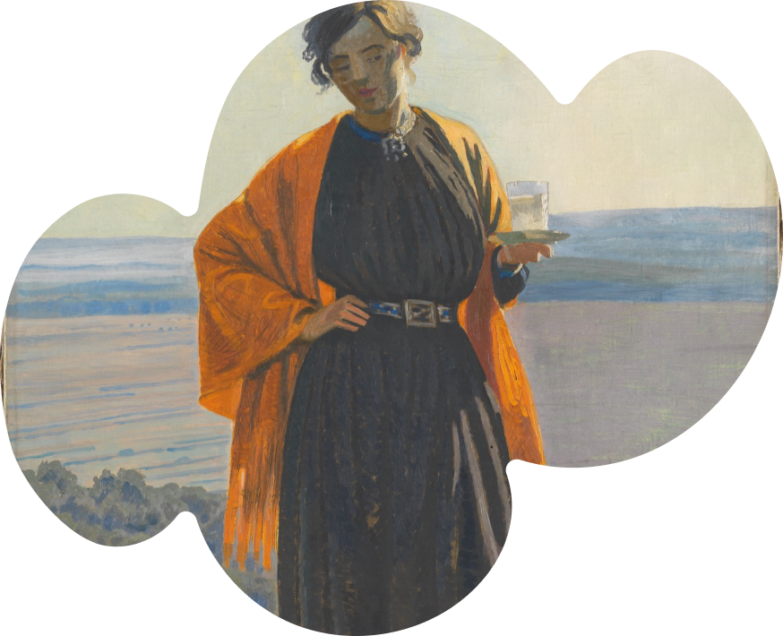
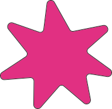

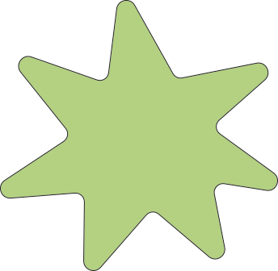
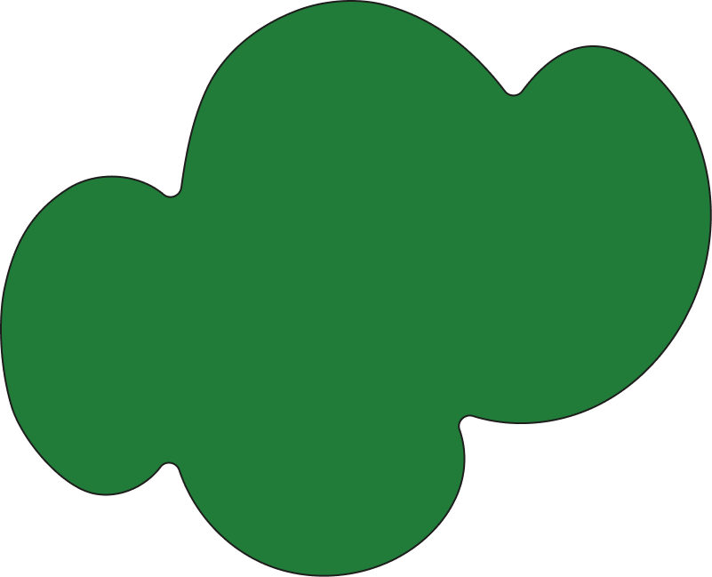
Herlig
Kristine!
Hun skal kose seg med et glass melk!
Du har nå klart 5 av 6 oppgaver!
Ai, nesten..
Prøv igjen!
Kristine